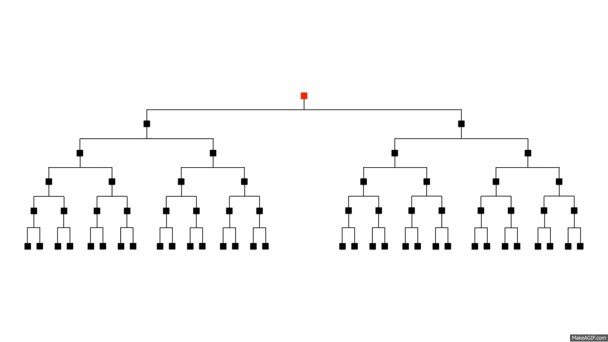

So we saw in the last example that going through a list using sequential search is one possible method of searching. However what if we had to go through a million items?! Then we may have to go through all 1 million items just to find the item we want. This is clearly inefficient so here we have a new method of searching!
In this algorithm we basically we keep splitting the list in half and choosing the correct list to split until we get to the item we want to find.
In this notation [n/2] is an integer (e.g. [9/2] = 4)
Below is an animation of binary search in action
Worked example
Find the number 6 in the given list of integers
1, 2, 3, 4, 5, 6, 7
Step 1. n = 7, s = 0, k = 6
Step 2. m = 3
Step 3. m < k, move to step 4
Step 4. m < k, let s = 3 + 1 = 4, return to step 2
Step 2. m = [(7 + 4)/2] = 5
Step 3. m < k, move to step 4
Step 4. m < 4, let s = 5 + 1 = 6, return to step 2
Step 2. m = [(7 + 6)/2] = 6
Step 5. Return the value at index 6
Try to write a binary search algorithm in Ruby to find the position of an element in an array.